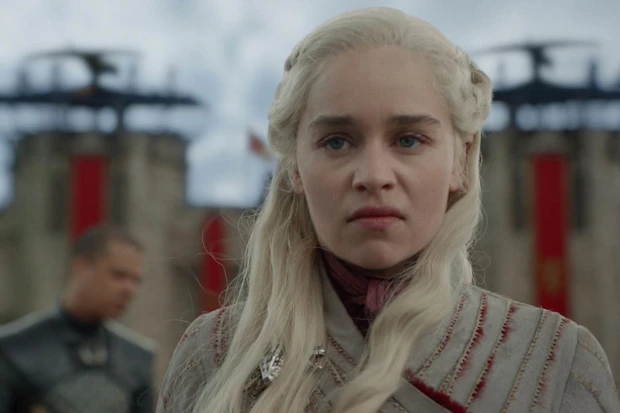
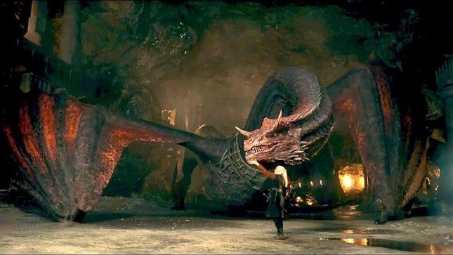
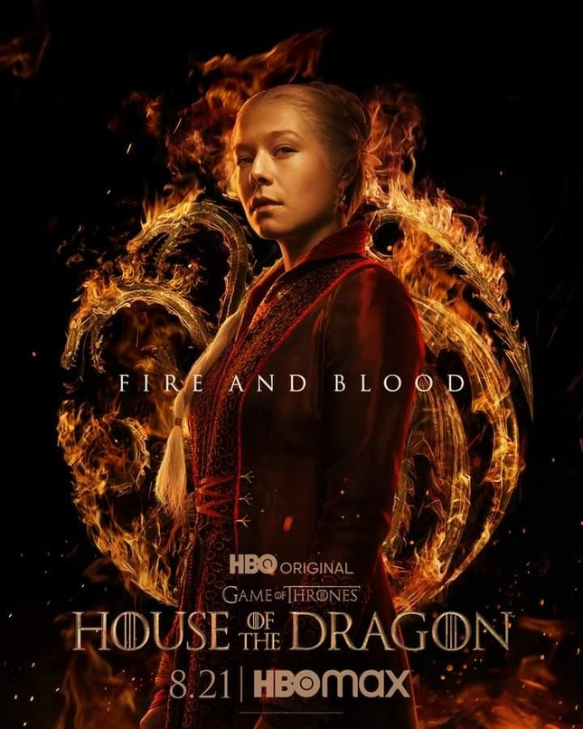
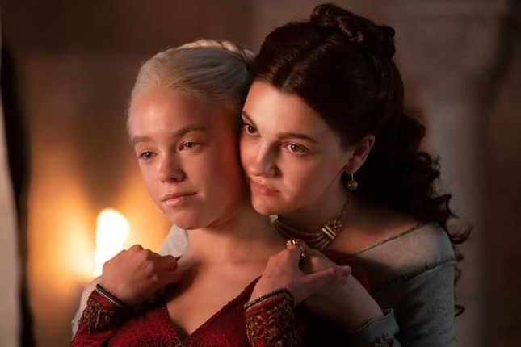

House of the dragon: Tiền truyện Game of Thrones
HHT - Sau khi siêu phẩm truyền hình "Game of Thrones" kết thúc vào năm 2019, HBO sẽ tiếp tục tung ra phần tiền truyện mang tên "House of the Dragon"
Hoành tráng về mặt hình ảnh
House of the Dragon lấy mốc thời gian hơn 200 năm trước khi các sự kiện chính trong Game of Thrones diễn ra, khi nhà Targaryen - gia tộc của “mẹ rồng” Daenerys - còn thống trị lục địa Westeros.

Mẹ rồng Daenerys là một trong những nhân vật được yêu thích nhất "Game of Thrones".
Những biến động chính trị đề cập đến trong bộ phim chủ yếu xoay quanh hai thế lực chính là công chúa Rhaenyra và hoàng tử Aegon - hai người con của vua Viserys Đệ Nhất. Sau khi vua Viserys băng hà, hai phe khơi mào cuộc chiến để tranh giành Ngôi Báu Sắt. Cuộc nội chiến trên đã dẫn đến trận đấu đẫm máu bậc nhất Westeros: Vũ điệu của Bầy rồng (Dance of the Dragons), cũng là nguyên nhân khiến loài rồng ở vùng đất này gần như trở nên tuyệt chủng.
Trong nguyên tác của nhà văn George R.R. Martin, vào thời Dance of the Dragons đã từng tồn tại đến 20 con rồng. Không biết tất cả có được “lên sóng” hay không, nhưng khán giả cũng sẽ không quá ngạc nhiên nếu bộ phim chi trả một chi phí khổng lồ cho những cảnh CGI hoành tráng về những sinh vật truyền thuyết này.

Một con rồng xuất hiện trong trailer.
Với kinh phí khoản 20 triệu USD (dưới 459 tỷ đồng) mỗi tập, House of the Dragon hứa hẹn sẽ mang đến những màn chạm trán mãn nhãn nhất của những đội quân hùng mạnh với sự góp mặt của những con rồng khổng lồ.
Giai thoại về lửa và máu
Mặc dù được mong đợi nhiều ở phần hình ảnh, nhưng House of the Dragon không phải là một bộ phim "sáo rỗng", chỉ tập trung vào độ hoành tráng của trận chiến. Nếu là người theo dõi Game of Thrones, hẳn ai cũng từng phải “căng não” và không thể rời mắt bởi những âm mưu chính trị khó đoán từ các thế lực kìm hãm lẫn nhau. Vì vậy, Gia Tộc Rồng cũng “drama” không hề kém cạnh.
Viserys Targaryen từng không có con trai, nên hoàng đế dành hết sự cưng chiều và tín nhiệm cho đứa con gái lớn của mình là Rhaenyra Targaryen. Ông cũng tuyên bố công khai rằng cô sẽ là người thừa kế hợp pháp của mình.

Công chúa Rhaenyra Targaryen.
Tưởng chừng công chúa sẽ sớm lên ngôi như dự định, nhưng Viserys lúc này lại cưới thêm một người vợ là Alicent Hightower. Bà hạ sinh hai hoàng tử, nên vị thế người kế vị của Rhaenyra vì thế mà bắt đầu lung lay, dẫn đến những mâu thuẫn châm ngòi cho cuộc chiến cũng khởi nguồn từ đây.

Căp “mẹ kế - con chồng” đầy thị phi Rhaenyra Targaryen và Alicent Hightower.
Nội dung bộ phim vẫn dựa trên cuốn tiểu thuyết Fire & Blood của nhà văn George R.R. Martin. Ông cũng tham gia vào quá trình sáng tạo dự án cùng Ryan J. Condal nên nội dung bộ phim sẽ có sự chỉn chu và sát với nguyên tác hơn.
Sự thổn thức từ người hâm mộ
Sự ủng hộ cũng như niềm phấn khích của khán giả quốc tế được thể hiện ngay bên dưới phần bình luận của những bài đăng trên các tài khoản mạng xã hội của HBO và House of the Dragon.
“Tim tôi đập thổn thức khi nghe nhạc nền của Game of Thrones" hay "Tôi đã nổi hết da gà khi xem điều điên rồ này" đều là những phản ứng nồng nhiệt từ những người hâm mộ của Trò Chơi Vương Quyền dành cho Gia Tộc Rồng.
Có thể thấy rằng, mặc dù vẫn còn đó sự thất vọng khó quên với mùa cuối của Game of Thrones, nhưng đa số người hâm mộ đều mang trong mình sự săn đón dành riêng cho phần tiền truyện và kỳ vọng bộ phim có thể sánh ngang với thành công của siêu phẩm thắng 59 giải Emmys trước đây.